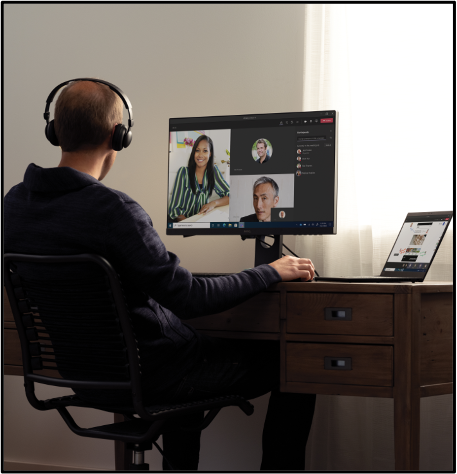

|

|
AffectiveSpotlight: Facilitating Audience Feedback in Online Presentations
Prasanth Murali,
Javier Hernandez,
Daniel McDuff,
Kael Rowan,
Jina Suh,
Mary Czerwinski
Conference on Human Factors in Computing Systems (CHI) , 2021
arXiv /
Press /
Preview-Video /
Conference Presentation
The ability to monitor audience reactions is critical when delivering presentations. However, current videoconferencing platforms offer limited solutions to support this. This work leverages recent advances in affect sensing to capture and facilitate communication of relevant audience signals. Using an exploratory survey (N=175), we assessed the most relevant audience responses such as confusion, engagement, and head-nods. We then implemented AffectiveSpotlight, a Microsoft Teams bot that analyzes facial responses and head gestures of audience members and dynamically spotlights the most expressive ones. In a within-subjects study with 14 groups (N=117),we observed that the system made presenters significantly more aware of their audience, speak for a longer period of time, and self-assess the quality of their talk more similarly to the audience members, compared to two control conditions (randomly-selected spotlight and default platform UI). We provide design recommendations for future affective interfaces for online presentations based on feedback from the study.
|
{kind=link}